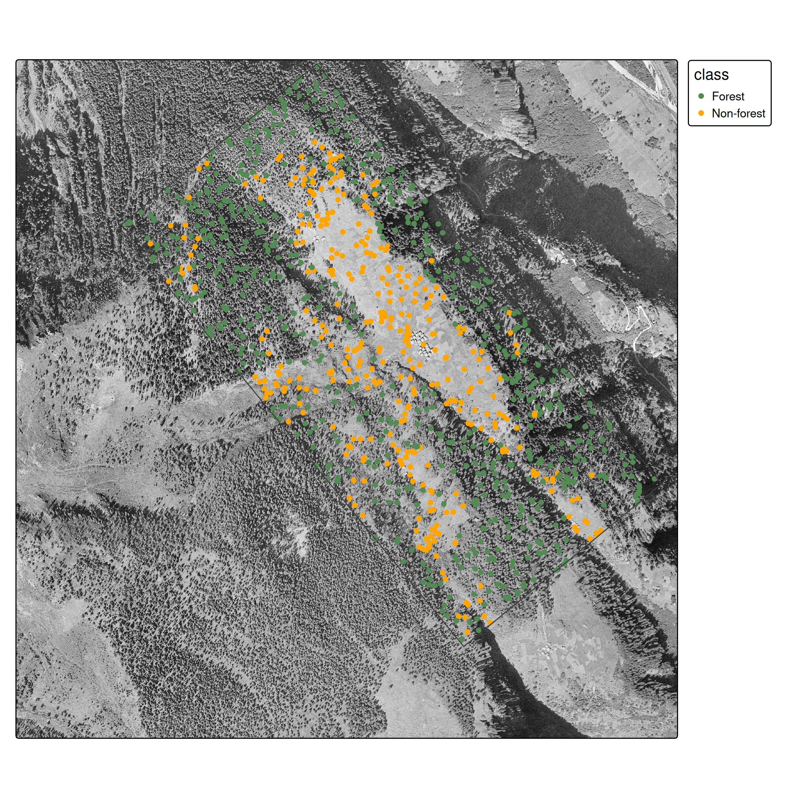
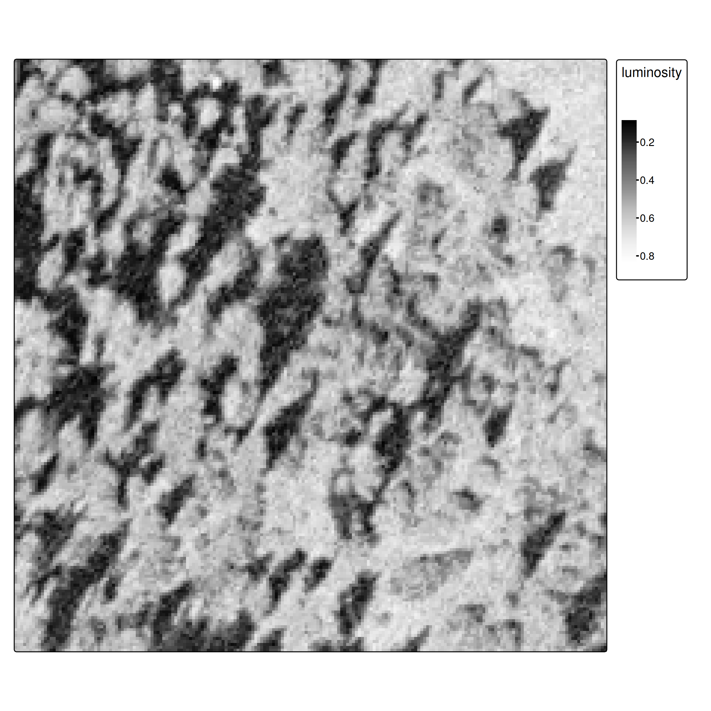
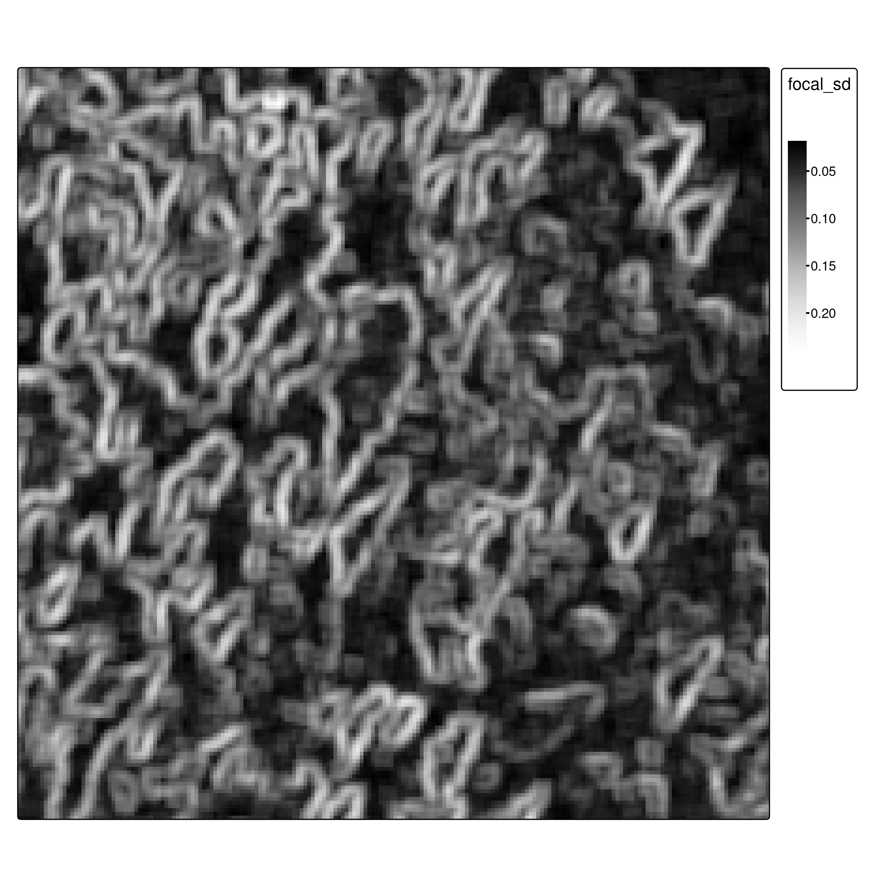

# Load polygons
library(sf)
ces_polygons <- read_sf("data/ces_polygons.gpkg", "ces_polygons")
study_area <- read_sf("data/ces_polygons.gpkg", "study_area")Supervised Classification in Remote Sensing
Introduction
- This lesson demonstrates supervised classification applied to remote sensing imagery
- We’ll classify historic aerial imagery from 1961 to distinguish forest from non-forest areas in Ces, Ticino, Switzerland
- Key focus: The spatial data workflow using terra/sf, not basic ML concepts
What makes RS classification different?
- Spatial structure: Pixels are not independent - spatial autocorrelation matters
- Scale of prediction: We predict on entire rasters (millions of pixels), not just point datasets
- Spatial sampling: Ground truth comes from polygons, requiring careful sampling strategies
- Feature engineering: Spatial context (focal operations) is critical, not just pixel values
These differences are why we can’t just apply generic ML tutorials to RS data!
The spatial workflow (terra/sf packages) and understanding spatial autocorrelation are essential skills, regardless of whether you use classical ML or deep learning.
Data
- Historic aerial imagery from 1961 (swisstopo)
- Single band (grayscale), 0.5 m/pixel resolution
- Images available for: 1961, 1971, 1977, 1983, 1989, 1995
- Ground truth forest polygons (hand-digitized)

Workflow Overview
- Load ground truth polygons and generate point samples
- Spatial train/test split (⚠ autocorrelation)
- Extract raster features using
extract() - Train classifier (CART for interpretability)
- Predict on entire raster
- Evaluate and compare approaches
Ground Truth & Spatial Sampling
From polygons to points
Unlike standard ML datasets, our ground truth comes as spatial polygons.

We need point samples for training:
# Generate spatially distributed samples
sample_points <- st_sample(ces_polygons, 1000) |>
st_sf()
# extract class per sample
labelled_data <- st_join(sample_points, ces_polygons) |>
select(-jahr)
labelled_data$class <- factor(labelled_data$class)
st_sample()
- Ensures spatial coverage across polygon extents
- Creates balanced datasets
- Simple random sampling across the entire study region (more sophisticated strategies exist)
Train/test split: The spatial autocorrelation problem
Important
Spatial autocorrelation issue: Random splits violate independence assumptions because nearby pixels are correlated. Proper approaches use spatial cross-validation (Brenning 2023; Schratz et al. 2021). We use random splits here for simplicity, but be aware this may overestimate performance.
Pedagogical simplification: Random train/test split
Production approach: - Spatial k-fold cross-validation with geographic blocking - Ensures training and test data are spatially separated - Packages: sperrorest, mlr3spatiotempcv, CAST - More realistic performance estimates
Approach 1: Single-Band Classifier
Feature extraction with terra::extract()
train_features <- terra::extract(ces1961, data_train, ID = FALSE)
data_train2 <- cbind(data_train[,"class"], train_features) |>
st_drop_geometry()
data_train2 class luminosity
1 Non-forest 0.6352941
2 Forest 0.2078431
3 Forest 0.3960784
4 Forest 0.2980392
5 Forest 0.1294118
6 Non-forest 0.6980392Training
We use CART (decision trees) for interpretability. As experienced ML practitioners, feel free to substitute with Random Forest, XGBoost, etc.
library(rpart)
cart_model <- rpart(class~luminosity, data = data_train2)Pedagogical choice: CART for transparency
Production alternatives: - Random Forest / XGBoost: Better accuracy, handles non-linearity - Support Vector Machines: Good with limited training data - Neural Networks: Requires more data but state-of-the-art performance
CART lets students see exactly what decision boundaries the model learned.

Raster prediction
# Predict probability per class for all pixels
ces1961_predict <- predict(ces1961, cart_model)
# Get highest probability class
ces1961_predict2 <- which.max(ces1961_predict)
Evaluation
| Forest | Non-forest | |
|---|---|---|
| Forest | 137 | 22 |
| Non-forest | 55 | 87 |
Overall accuracy: 0.74
The Spatial Context Problem
- At pixel level, it is hard to distinguish forest from non-forest
- Spatial context is essential: Humans use spatial context (texture, patterns, neighbors) to classify land cover

This is the core limitation of pixel-based classification.
Modern deep learning (CNNs) solves this automatically by processing image patches, but we’ll first show the manual approach to understand why spatial context matters.
Approach 2: Adding Spatial Features
- Focal operations as feature extractors: Focal operations aggregate neighborhood values, providing spatial context
i <- 5
focal_window <- matrix(rep(1, i^2), nrow = i)
# Calculate standard deviation in each neighborhood
ces1961_focal_sd <- focal(ces1961, focal_window, fun = "sd")Pedagogical approach: Handcrafted focal features
Why we do this: - Explicit, understandable feature engineering - Shows what spatial context means (texture/variation) - Works with classical ML algorithms
Production approach: Convolutional Neural Networks (CNNs) - CNNs learn optimal spatial filters automatically during training - First layer convolution weights = learned focal operations - Can learn multi-scale features (equivalent to multiple focal window sizes) - State-of-the-art: U-Net, DeepLabV3+, Vision Transformers

Normalization for multi-feature learning
When combining features, normalize to [0,1] using min-max scaling:
\[x' = \frac{x - \min(x)}{\max(x) - \min(x)}\]
minmax_normalization <- function(x){
minmax_vals <- minmax(x)[,1]
(x - minmax_vals[1]) / (minmax_vals[2] - minmax_vals[1])
}
ces1961_focal_sd <- minmax_normalization(ces1961_focal_sd)
# Combine original and focal features
ces_multi <- c(ces1961, ces1961_focal_sd)
names(ces_multi) <- c("luminosity", "focal_sd")Training with spatial features
cart_model_multi <- rpart(class~., data = data_train2_multi)
Prediction and evaluation
| Forest | Non-forest | |
|---|---|---|
| Forest | 175 | 37 |
| Non-forest | 17 | 72 |
Overall accuracy: 0.82 (vs. 0.74 without spatial features)
Further improvements
For advanced applications, consider:
- More focal features: mean, variance, edge detection filters
- Multi-scale features: focal operations at different window sizes
- Deep learning: CNNs naturally capture spatial context
- Object-based classification: segment first, then classify
- Proper spatial CV: Use spatial blocking for more realistic evaluation
Key message for students:
Our approach teaches the concepts: - Why spatial context matters - How to work with spatial data in R - The ML workflow for remote sensing
In practice, you’d use deep learning frameworks (TensorFlow/PyTorch) with architectures designed for image segmentation. The concepts remain the same, but the implementation is more sophisticated.
Good starting points: - TorchGeo (PyTorch for geospatial data) - segmentation_models.pytorch (pre-built architectures) - Papers: U-Net for RS, DeepLabV3+, attention mechanisms
Tasks
Core exercises
- Download datasets (ces_polygons.gpkg and TIF files for 1961-1995) from Moodle
- Implement the complete workflow:
- Load and sample spatial ground truth
- Train classifier (single band or with additional features)
- Evaluate with confusion matrix
- Apply model temporally and analyze forest cover trends